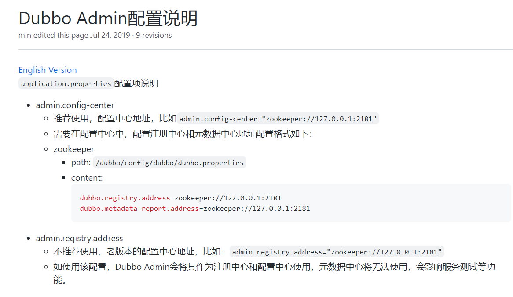
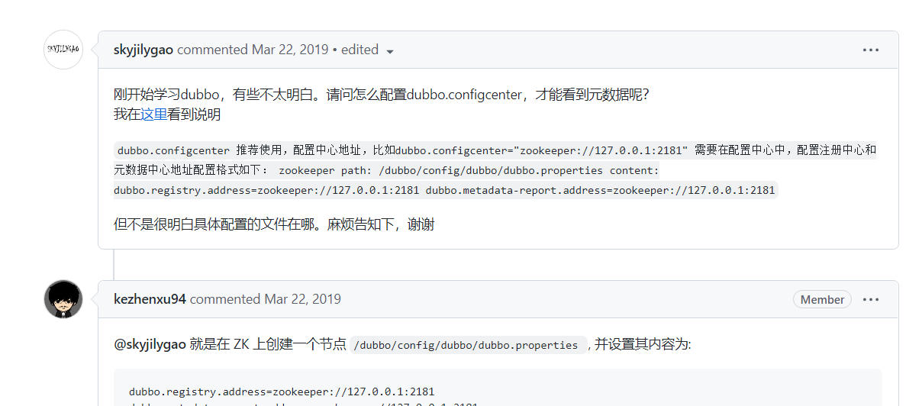

看看官方说明：

这里还有人提问了的


原来是要在zookeeper里面增加这个节点: /dubbo/config/dubbo/dubbo.properties ，并且设置值。
在网上找到个方法
1
2
3
4
5
6
7
8
9
10
11
12
13
14
15
16
17
18
19
20
21
22
23
24
25
26
27
| import org.apache.curator.framework.CuratorFramework;
import org.apache.curator.framework.CuratorFrameworkFactory;
import org.apache.curator.retry.ExponentialBackoffRetry;
public class Test {
public static void main(String[] args) {
try {
CuratorFramework zkClient = CuratorFrameworkFactory.builder().
connectString("192.168.232.130:2181").
retryPolicy(new ExponentialBackoffRetry(1000, 3)).build();
zkClient.start();
```java
if (zkClient.checkExists().forPath("/dubbo/config/dubbo/dubbo.properties") == null) {
zkClient.create().creatingParentsIfNeeded().forPath("/dubbo/config/dubbo/dubbo.properties");
}
zkClient.setData().forPath("/dubbo/config/dubbo/dubbo.properties", ("dubbo.registry.address=zookeeper://192.168.232.130:2181\n" +
"dubbo.metadata-report.address=zookeeper://192.168.232.130:2181").getBytes());
}catch (Exception e) {
e.printStackTrace();
}
}
}
|
原文链接：https://blog.csdn.net/wangxq0224/article/details/99304253
重启了所有东西

成功了！窝草